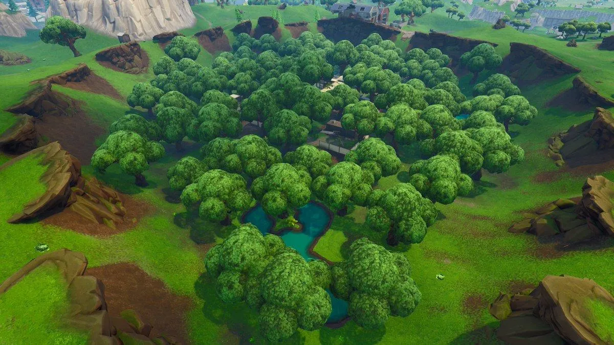

In the middle of the map awaits a hole, or a divot some might say. It wasnt green t slowly got green. Wasn't the best for loot but plenty of people went to it. Often people hid in trees to jump out at any moment.
Oh what a wonderful little town. So many little tiny houses and so many little tiny people. Oh god why are they shooting eachother!
About Content Element #3